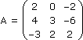
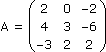
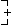
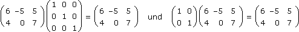
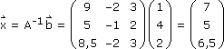
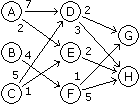
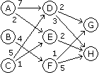
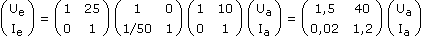

XIII. MATRIZENRECHNUNG
A. Matrizen und Determinanten
B. Lineare Gleichungssysteme
C. Lineare Abbildungen
D. Praktische Anwendungen
 Ergänzungen und Details
Ergänzungen und DetailsEine Matrix besteht aus Elementen, typischerweise reelle Zahlen, die in einer rechteckigen Tabelle angeordnet und dementsprechend über Zeilen- und Spaltenindizes nach der Zeile-zuerst-Regel adressiert werden. Eine mxn-Matrix hat also m Zeilen und n Spalten:
2 Matrixoperationen
• Die transponierte Matrix erhalten wir, indem wir die Spalten als Zeilen (oder umgekehrt) schreiben:
• Die Matrizenaddition (und -subtraktion) und die Multiplikation-mit-Skalar wird wie bei Vektoren ausgeführt, also elementweise:
Hinsichtlich der zugehörigen Rechenregeln bilden die mxn-Matrizen damit genauso einen reellen Vektorraum wie die "klassischen" Vektoren. Diese wiederum können wir auch als einspaltige/zeilige Matrizen ansehen.
• Bei der Matrizenmultiplikation werden die Zeilenvektoren der ersten Matrix mit den Spaltenvektoren der zweiten Matrix skalar multipliziert:
Die Matrizenmultiplikation ist assoziativ, aber nicht kommutativ (auch nicht für quadratische Matrizen).
Aufgabe 1: Berechne a) 3A + BC, b) CAT + B2, c) (A – C)TB, wenn
a)
b)
c)
3 Determinanten
• Für die Determinante einer quadratischen Matrix gehen wir alle Möglichkeiten durch, in jeder Spalte eine andere Zeilennummer auszuwählen und die dortigen Elemente miteinander zu multiplizieren. Diese Produkte werden addiert bzw. im Fall von ungeradzahlig vielen Fehlständen subtrahiert. (Zwei Spalten "stehen fehl" zueinander, wenn in der vorderen eine größere Zeilennummer ausgewählt wurde als in der hinteren.)
Schreibweise:
|A| oder det(A) := Determinante von A
Bem: Ob wir das Ganze über Spalten oder Zeilen aufziehen, ist egal (d.h. eine Matrix und ihre transponierte Matrix haben dieselbe Determinante).
Aufgabe 2: Berechne die Determinante von A über die "Leibniz-Formel" so wie oben beschrieben.


4 Laplace'scher Entwicklungssatz
Ein Platztausch benachbarter Spalten/Zeilen ändert deren Stand zueinander und damit das Vorzeichen der Determinante, da alle Produkte ihr altes Muster in ein neues mit einem Fehlstand mehr bzw. weniger ändern. Das können wir nützen, um die Determinante von A in solche von Aij (= A ohne i-te Zeile und j-te Spalte) zu entwickeln, beispielsweise nach der j-ten Spalte:

Aufgabe 2': Entwickle die Determinante von A nach der zweiten Spalte.

Historisch gesehen ist man zuerst beim Lösen linearer Gleichungssysteme auf Determinanten gestoßen:
(1) a11x + a12y = b1 |·a22
(2) a21x + a22y = b2 |·(–a12)
(2) a21x + a22y = b2 |·(–a12)

 (a11a22 – a21a12)x = a22b1 – a12b2 :( ) x =
(a11a22 – a21a12)x = a22b1 – a12b2 :( ) x = a22b1 – a12b2
a11a22 – a21a12
(1) a11x + a12y = b1 |·(–a21)
(2) a21x + a22y = b2 |·a11
(2) a21x + a22y = b2 |·a11
(a11a22 – a21a12)y = a11b2 – a21b1 :( ) y = a11b2 – a21b1
a11a22 – a21a12
Der Nenner ist die Determinante der Koeffizientenmatrix und bestimmt (lat. determinare), ob das System eindeutig lösbar ist, weil wir nur im Fall von |A|≠0 dividieren können. Der Übergang zu höheren Dimensionen enthüllt das generelle Rechenschema hinter Determinanten, ändert aber nichts an der Cramer'schen Regel, die die Determinanten von Aj (= A mit b-Spalte als j-ter Spalte) und A ins Verhältnis setzt:
Für mehr Einblick schreiben wir das Ganze als Vektorgleichung:
Linear unabhängige Vektoren a`1,... a`n spannen für 0 ≤ xj ≤ 1 ein n-dimensionales Parallelepiped auf und |A| ist das "orientierte Volumen" davon.
Aufgabe 3: Löse das folgende Gleichungssystem über die Cramer'sche Regel und interpretiere das Ganze grafisch:
|
(1) 4x – 2y = 2
(2) x + y = 5
|
2 Einheitsmatrix und inverse Matrizen
• Eine quadratische Nullmatrix mit 1en in der Hauptdiagonale heißt Einheitsmatrix E, weil sie sich bei Matrizenmultiplikationen neutral verhält.
Beispiel:

• Die zu einer quadratischen Matrix A inverse Matrix A–1 = (xij)T mit xij = (–1)i+j
|Aij|
|A|
Beweis:
Wir betrachten die Spalten von AXT = E als lineare Gleichungssysteme und lösen sie über die Cramer'sche Regel:
Genauso können wir die Zeilen von XTA = E als lineare Gleichungssysteme betrachten:
Aufgabe 4: Löse das folgende Gleichungssystem über die inverse Koeffizientenmatrix:
|
(1) 2x – 2z = 1
(2) 4x + 3y – 6z = 4
(3) –3x + 2y + 2z = 2
|
Ax` = b` A–1(.)

• Eine Abbildung a zwischen Vektorräumen heißt linear, wenn
a(x`1 + x`2) = a(x`1) + a(x`2) und a(λx`) = λa(x`)
• Eine lineare Abbildung a:
 n
n  m ist daher durch die Bildvektoren der Basisvektoren charakterisiert, weil damit die Bilder der übrigen aus den Basisvektoren zusammengebauten Vektoren unter Beibehaltung der "Baupläne" nachgebaut werden:
m ist daher durch die Bildvektoren der Basisvektoren charakterisiert, weil damit die Bilder der übrigen aus den Basisvektoren zusammengebauten Vektoren unter Beibehaltung der "Baupläne" nachgebaut werden:Die linearen Abbildungen
 n m entsprechen also den mxn-Matrizen, wobei die Hintereinanderausführung zur Matrizenmultiplikation wird:
n m entsprechen also den mxn-Matrizen, wobei die Hintereinanderausführung zur Matrizenmultiplikation wird:(aob)(x`) = A(Bx`) = (AB)x`
2 Eigenwerte/vektoren
Wenn eine lineare Abbildung eines Vektorraums auf sich selbst einen Vektor ≠ o` nur skaliert, heißt dieser Eigenvektor und der Skalierungsfaktor Eigenwert. Da der Nullvektor immer eine Lösung des linearen Gleichungssystems
Ax` = λx`
(A – λE)x` = o`ist, setzt die Existenz weiterer Lösungen voraus, dass die Cramer'sche Regel nicht anwendbar ist:
|A – λE| = 0
Um die Eigenwerte/vektoren einer quadratischen Matrix A zu bestimmen, müssen wir daher die Polynomgleichung
lösen und anschließend für jede Lösung λi das entsprechende lineare Gleichungssystem.
SVG (Scalable Vector Graphics) ist eine Sprache zur Beschreibung 2-dimensionaler Grafiken, um diese von Webbrowsern am Bildschirm darstellen zu lassen. Der Bildschirm wird in einen xyz-Raum eingebettet, damit auch das Verschieben am Bildschirm zur linearen Abbildung wird: Die x-Achse läuft nach rechts, die y-Achse nach unten, die z-Achse in den Bildschirm hinein, der Ursprung liegt links oben und eine Einheit vor dem Bildschirm.
Aufgabe 5: Bestimme die Transformationsmatrix
für a) translate(tx, ty) b) scale(sx, sy) c) rotate(α)
für a) translate(tx, ty) b) scale(sx, sy) c) rotate(α)
Die Spalten der Transformationsmatrix sind die Bilder der Basisvektoren:
Zusatzaufgabe: Bestimme die Transformationsmatrix einer 18°-Drehung um den Ursprung mit anschließender Verschiebung um 50 Pixel nach rechts und 20 Pixel nach unten.
Bem: In SVG werden Transformationsmatrizen spaltenweise ohne die letzte Zeile angegeben, d.h.
<g transform="translate(50,20)">
<g transform="rotate(18)">
...
</g>
</g>
entspricht
<g transform="matrix(0.95,0.31,-0.31,0.95,50,20)"> ... </g>
2 Produktionsketten
Aufgabe 6: Das folgende Diagramm gibt an, wie viele Einheiten von Vorprodukten in die Produktion einer Einheit eines Folgeprodukts einfließen. Benötigt werden g und h Einheiten der Endprodukte G und H. Formuliere über Gleichungen, wie viele Einheiten von Vorprodukten dafür benötigt werden und wie viele Einheiten von Vor-Vorprodukten wiederum dafür. Mache daraus eine Matrizengleichung und löse sie für g = 150 und h = 200.


3 Lineare Vierpole
Vierpole sind Netzwerke mit je zwei Ein- und Ausgangsklemmen zur Übertragung elektrischer Energie:
Aufgabe 7: Bestimme die Kettenmatrix

für die Vierpole
und die fehlenden Größen in c), wenn d) Ua = 4 V, Ia = 0,1 A bzw. e) Ue = 15 V, Ie = 0,4 A.
für die Vierpole
und die fehlenden Größen in c), wenn d) Ua = 4 V, Ia = 0,1 A bzw. e) Ue = 15 V, Ie = 0,4 A.
a) Ie = Ia und Ue = RIa + Ua
b) Ue = Ua und Ie = + Ia
Ua
R
c) 
d)
e)